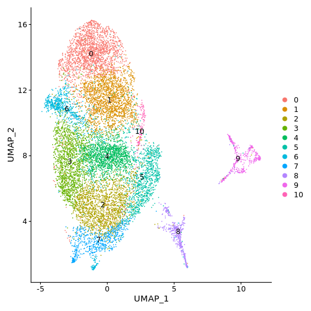
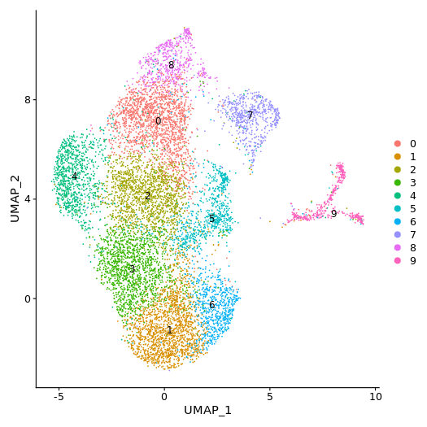
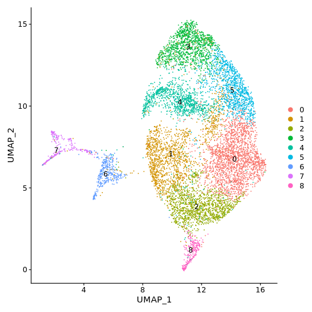
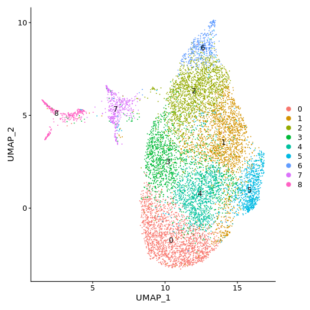

本组学与 sc_10x 为同一次 Chromium GEM 分库的双平台测序（Nanopore 全长 cDNA），因此 10X Nanobarcode 在两平台一一对应（barcode 交叠 100%，见第 7 节）。上游 01 basecalling / 02 QC / 03 wf-single-cell 由测序公司完成，本报告记录其交付结果、细胞重捞回修正与本地 05/06/07/09 下游分析。
reads / full-length 数取自 wf-single-cell 交付的 config_stats.json；检测细胞数 = 白名单对齐后的最终细胞数（与 10X filtered 矩阵一致）。
EPI2ME wf-single-cell（10xv3 chemistry）的基因/转录本计数矩阵 + 官方报告：barcode 检出（knee plot）见下，完整报告按样本切换。
公司按样本独立运行 Seurat 标准流程并输出差异基因/富集分析（DIFF、enrich/GO/KEGG/Reactome 等）。此处展示每样本 gene 层 cluster UMAP。跨样本统一注释由第 7 节 10X 注释按 barcode 转移完成（99.8% 成功率）。




交付物中还含 tSNE、PCA、Marker/DIFF 表、GO/KEGG/Reactome 富集等（位于 upstream/3.Seurat/<sample>/{gene,isoform}/，此处未全部内嵌）。
基于细胞重捞回后的 transcript_rescued_feature_bc_matrix（细胞 × ENSMUST 转录本，10X 白名单对齐），用 GFF 的 cmp_ref 属性做 tx→gene 映射（实测匹配率 99.7%），并对每样本做 pseudobulk（06/07 输入）。
对 4 组对比（A1Het_vs_WT / KO_vs_WT / A1Rescue_vs_WT / A1Rescue_vs_A1Het，对比名已随 2026-09-21 KO/A1-Het 标签勘误对调）做转录本使用差异分析。当前 n=1/组：正式的 satuRn 检验未产出（每样本细胞随机拆 3 份的伪重复 p 值偏乐观，仅存档）；本报告以描述性 Δusage与 hnRNP A1 经典/候选靶基因专项图为准。
查看统计设计说明 Δusage KO vs WT Δusage A1Het vs WT Δusage A1Rescue vs WT Δusage A1Rescue vs A1Het
基于 GFF 3' 端簇调用 PAS（poly(A) 位点），构建 consensus PAU 矩阵，计算每对比的 ΔPAU 与基因级 3'UTR 延长指数（distal change）。严格统计版（APALORD）需 IsoQuant 前置文件，交付数据暂缺，故为描述性结果。
下载靶基因 PAS 明细 下载 consensus PAU 矩阵 下载 distal change KO vs WT 下载 distal change A1Rescue vs A1Het
Nanopore 各样本细胞 barcode 与 10X 四库的交叠百分比：对角线 = 配对样本（100%），非对角 ~0.4% 为随机本底。细胞重捞回后对角线达到满值。
shared_cells = barcode 在双平台同时检出且计入 10X filtered 矩阵的细胞；nCount_spearman = 共享细胞双平台 UMI 数相关性（log1p）；pb_gene_spearman = 配对 pseudobulk 基因表达 Spearman。细胞重捞回后 nano 细胞数与 10X 完全一致，单细胞 UMI 相关性从 ~0.89 提升至 ~0.987。
10X 注释的细胞类型标签通过 barcode（同 GEM 配对，匹配率 ~100%）直接转移到 Nanopore 细胞，在 Nanopore 自建 UMAP 上可视化验证转移效果。
双平台各自 pseudobulk 计算基因 log2FC，比较方向一致性（Spearman rho）。细胞重捞回后 rho 0.43~0.50，双平台基因层方向一致性良好（n=1，转录本层差异以 Nanopore 全长读数为准）。橙色点为 Sirt6 / Hnrnpa1。
下载 barcode 交叠矩阵 下载配对概览 下载组成比较 下载 WT 共享细胞表 下载 logFC 一致性 KO vs WT
以下全部文件与本 index.html 位于同一 showcase 目录内，打包整个目录后可在本地浏览器（Chrome/Edge 推荐）直接查看。